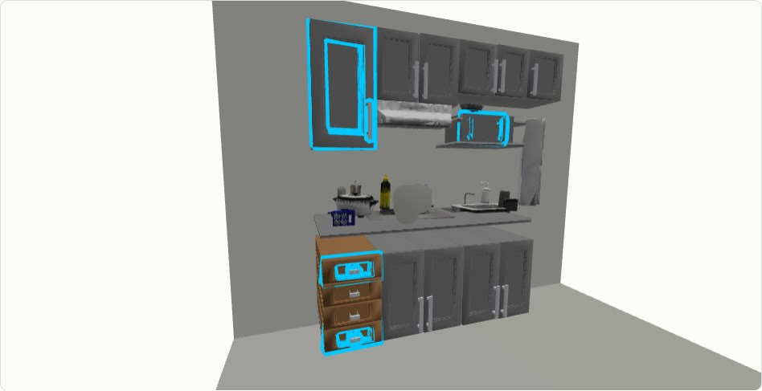

Kitchen
PokeBot rebuilt this scene from a phone scan. Each object in the tiles below has identified physical values.
Phone scan
Rebuilt scene

PokeBot rebuilt this scene from a phone scan. Each object in the tiles below has identified physical values.
